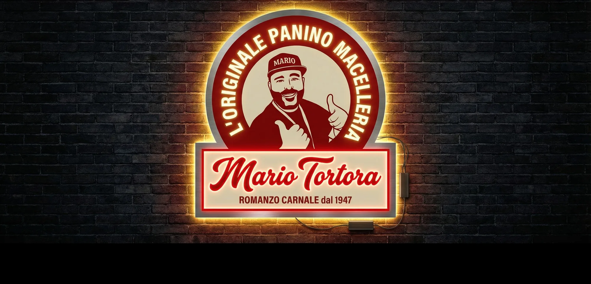
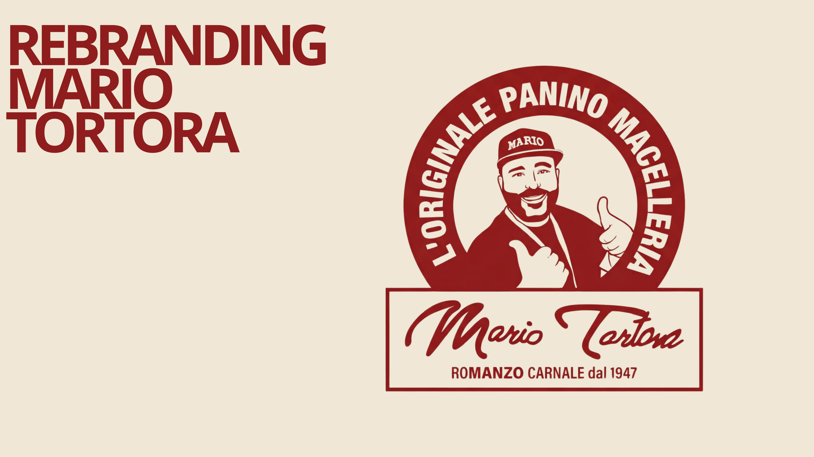
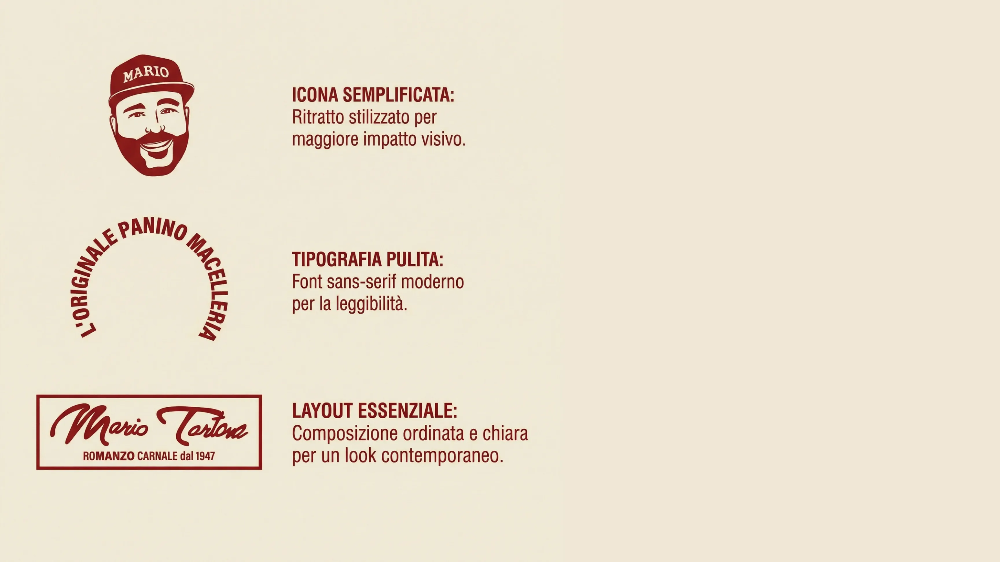
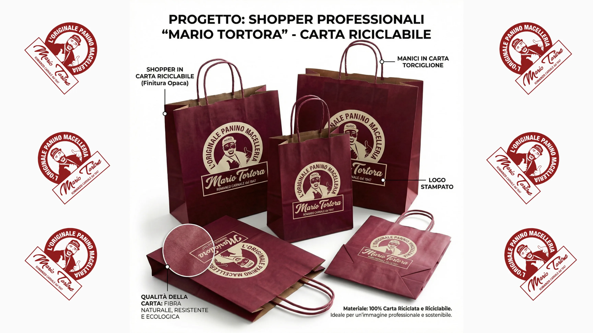
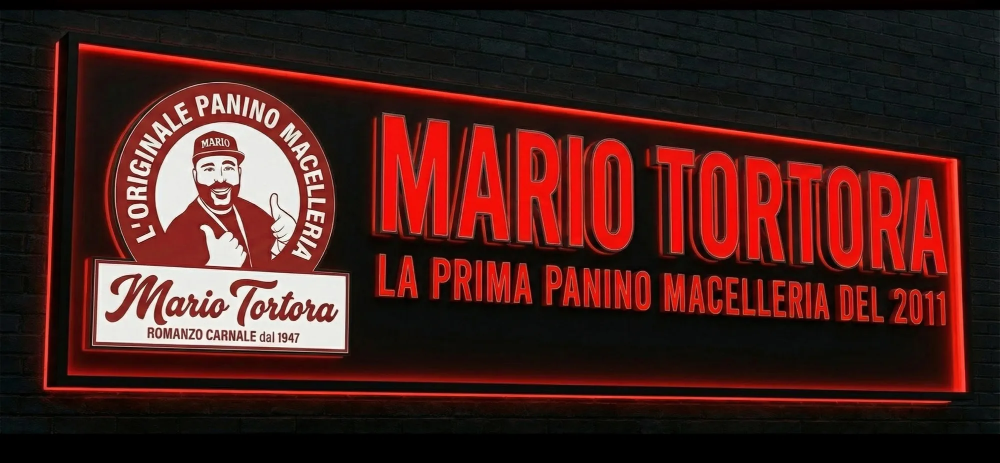
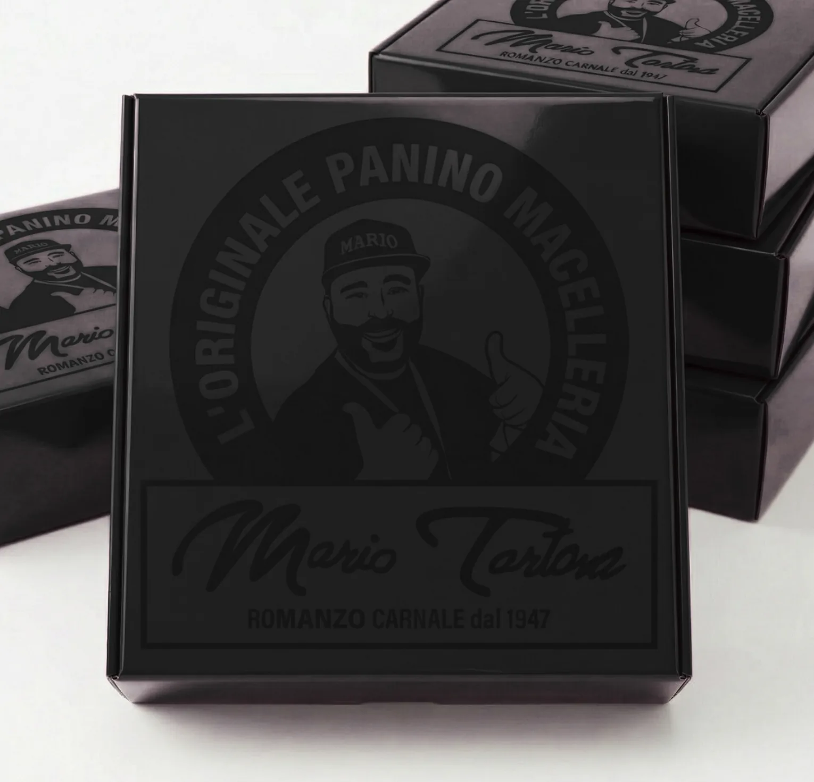

Mario Tortora
Mario Tortora è la prima panino macelleria di Napoli, un romanzo carnale che dal 1947 porta in tavola la carne come racconto. Un marchio storico che aveva bisogno di parlare al presente senza perdere la sua anima popolare.
Abbiamo curato il rebranding completo: icona semplificata per un impatto più immediato, tipografia pulita e layout essenziale, fino al packaging (shopper in carta riciclabile e box compatti) e alle insegne, dall'esterna a LED all'insegna circolare luminosa.




